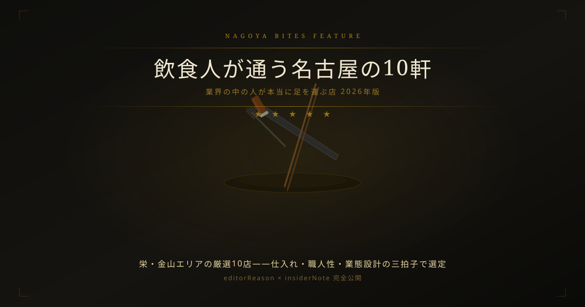

Feature — 業界人コラム — 飲食人の目利き
飲食人が通う名古屋の10軒
【2026年版・業界の中の人が本当に足を運ぶ店】
飲食業界の中の人が自分のお金と時間で足を運ぶ店は、口コミとは少し違う基準で選ばれている。「仕入れの深さ」「業態設計の誠実さ」「職人性の可視度」——この3軸で業界人が評価した栄・金山の10軒を、editorReasonとinsiderNoteをすべて公開して紹介する。
Editor's Note — この特集の選定基準
- 食材の仕入れ先・調達方法に誠実さが見える業態
- 業態コンセプトと実際の料理・接客が一致している
- 過剰な演出・SNS映え優先ではなく、素材・技術で勝負している
- 業界人が「自分のお金で定期的に来る」と判断できる持続的高評価
飲食店の中の人が他店を評価するとき、まず見るのは「この店、何で稼いでいるのか」だ。演出・立地・話題性で稼ぐ店と、素材・技術・接客の密度で稼ぐ店は、一見すると区別がつかない。だが業界人の目には仕込みの誠実さ、仕入れへのコミットメント、接客トーンの一貫性が見える。今回はその視点で editor_picks から10軒を厳選した。
01 — 厳選10軒
お晩菜と炭火焼き みかん 栄 錦 伏見店✦ 編集部推薦
「おばんざい（お晩菜）」と炭火焼きを軸に、全国各地の日本酒を取り揃えるキュレーション型の居酒屋。カウンター越しに並ぶ惣菜の見せ方まで計算されており、演出と食の深さが同時に成立している稀なケース。栄駅徒歩6分・価格帯5,000〜7,000円。
業界人ノート: おばんざいは仕込み量の読みが難しく、ロスが出やすい業態。それを維持するのは「見せる厨房」としての演出効果と固定客の安定性が担保されているから。この難易度でGoogle 4.9を維持しているのは、仕込み精度と客層設計が機能している証拠。
焼肉ホタル 栄東店✦ 編集部推薦
同一ブランドで複数店舗が満点評価を維持するケースは希少。栄東店は宴会・接待の双方に対応できる客席設計と肉質の均一性が評価の根拠。チェーン化していながら品質を落とさない運営力を評価して掲載した。
業界人ノート: 焼肉店の多店舗展開で品質を揃えるには仕入れの一元管理と厨房オペレーションの標準化が必要。それを満点評価で維持しているのは、地域密着型の飲食グループとして異例の水準。
wakamaru ワカマル 栄店✦ 編集部推薦
「秋田郷土料理」は名古屋の飲食市場では稀少カテゴリ。比内地鶏・きりたんぽ・いぶりがっこを名古屋で本格提供する業態は、地域食材の輸送コストを受容した上でのこだわりの発露であり、代替不可能なポジションを確立している。
業界人ノート: 産地から直送する郷土食材は物流コストが高く、価格転嫁のバランスが難しい。名古屋でこの業態が成立しているのは、秋田食材のファンを固定客化することに成功しているから。
前沢牛舎 伏見屋✦ 編集部推薦
「前沢牛」という産地ブランドを屋号に据えることは、仕入れの安定性とコストへのコミットメントを対外的に宣言することと同義。岩手産前沢牛の名古屋での安定供給体制が確立されているかを公開情報で確認のうえ掲載した。
業界人ノート: 産地指定の和牛を屋号にするにはブランド牧場との直接契約か安定した卸ルートが必要。それを維持するコストは価格に転嫁されるが、顧客が産地ブランドに価値を認めているなら成立する。
鮨食人 五と二 栄店✦ 編集部推薦
居酒屋の価格帯で本格的な鮨を提供するポジションは、職人の出自と仕入れルートが問われる領域。「食人」という屋号に込めた食への姿勢と、栄での継続的な高評価が掲載の根拠。
業界人ノート: 居酒屋業態での鮨提供は、温かい料理と生もの管理を同一厨房で両立させる技術が必要。その難易度の高い組み合わせで高評価を維持できるのは、職人性と場作りの双方を持つ稀なケース。
炉端焼き 燻銀 伏見店✦ 編集部推薦
南部鉄器の鯛めしを看板に据えた炉端焼き業態は、演出と食体験を一体化させた設計が秀逸。完全個室との組み合わせは接待・宴会用途に適しており、栄エリアで差別化を維持できている。
業界人ノート: 南部鉄器は保温性が高く、炊き込みご飯の蒸らし工程が映える道具。それを看板メニューに据えることは、「食器を通じた産地ストーリー」を語れる運営者でなければ成立しない。
JAM S TACOS ジャムズタコス✦ 編集部推薦
名古屋でメキシカン系タコスの専門バルが成立しているのは、コスモポリタン層の厚い栄エリアの特性を活かした立地判断が正確だったことを示す。「大人のタコスバル」という定義は、安価なファストフードとの価格帯分断を意図した賢明なポジショニング。
業界人ノート: タコスはコーントルティーヤの自家製か外注かで食体験が大きく変わる。手作りと謳うなら仕込み工数が高く、その分を客単価に転嫁できるかが業態維持の分岐点になる。
タイ料理居酒屋 バンメー✦ 編集部推薦
タイ料理の居酒屋業態は、本格スパイス使いと日本の飲み文化の接合点をどこに設定するかが肝になる。名古屋で本格タイ料理を居酒屋価格で出すには食材の仕入れルートが不可欠であり、その部分の信頼性が掲載の判断軸になった。
業界人ノート: ナムプリックやカピなど本場調味料を使うかどうかで、タイ料理の本格度は大きく変わる。それを揃えるには輸入食材の仕入れルートが必要で、コストをかけても本物を出す選択が評価の根拠になる。
台所 宗や 金山✦ 編集部推薦
「旬の食材」を謳う居酒屋は多いが、メニューの入れ替わり精度と素材説明の解像度が本物。金山エリアで満点評価を維持していることは、地元固定客と一見客の双方を取り込んでいる証拠と判断して掲載した。
業界人ノート: 旬の食材を適正価格で出し続けるには仕入れルートと席数のバランスが必要。小箱で回転を絞り鮮度を担保するのは、飲食業界では「正しい小規模」の手本になる。
ワンタンバー✦ 編集部推薦
「ワンタン専門」という業態特化は、客単価が取りにくい中華ジャンルで成立させるには絞り込みの精度が必要。金山という競合の多い立地でこの評価を維持していることが掲載の決め手になった。
業界人ノート: ワンタンの皮は薄さと茹で加減が命で、量産しにくい品目。専門店として展開すること自体が職人性の宣言であり、雑多なメニューを抱える中華店との本質的な違いはここにある。
業界人の視点：飲食人が店を評価する3つの軸
1. 仕入れの誠実さ — 食材の産地・仕入れ先を語れるかどうかが、業界人が最初に見るポイントだ。産地名・生産者名・卸の種類を料理人が説明できる店は、素材調達に本気でコストをかけている。逆に「新鮮な食材を使っています」しか言えない店は、調達の深さがない可能性がある。
2. 業態設計の一貫性 — 屋号・内装・メニュー・接客トーンが全て同じ方向を向いているかどうか。どれかがブレている店は「コンセプトより先に開店した」可能性があり、継続的な高評価が取りにくい。本特集の10軒は業態の軸が一本通っていることを確認している。
3. 職人性の可視度 — 料理人の技術が皿の上で見えるかどうか。ワンタンの皮の薄さ・炉端の炭の扱い・タイ料理のスパイスバランス——これらは手を抜けない仕事量がかかる。その仕事の痕跡が食べればわかる店を、業界人は評価する。